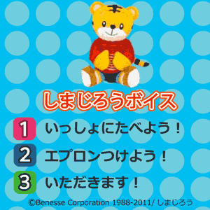
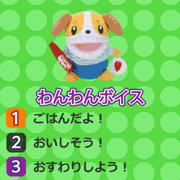

<!-- main -->
<div id="main">

<div id="kyouzai">

<div class="block">
<h3>いっしょにたべよう<br />おさそいボイス</h3>
<p>しまじろうやできたよわんわんがご飯を食べる前に誘ってくれるボイスです。しまじろうパペットやできたよわんわんの人形に携帯を入れて、まるで本当にしゃべっているかのように誘いかけられます。</p>
</div><!-- /.block -->


<div class="block">
<p class="play">■遊び方<br/>
使いたいボイスをタップで選んでください。</p>
</div><!-- /.block -->

<div class="block">
<p class="center">おさそいボイス　しまじろう</p>
<br />
<a href="src/voice_shimajiro_android.swf" data-role="button" data-theme="e" rel="external">ダウンロード</a>
<br />
<br />
<p class="center">おさそいボイス　わんわん</p>
<br />
<a href="src/voice_wanwan_android.swf" data-role="button" data-theme="e" rel="external">ダウンロード</a>
<br />
</div><!-- /.block -->


<div class="block">
<a href="http://www.youtube.com/watch?v=xHUpoYfdSQ4" style="color:#ff6699;" rel="external"><span style="color:#ff6699;font-size:medium">ボイスの使い方動画「ボイスって<br />なあに？」を見る</span></a> (約30秒)<br /><br />
<p class="tx_gray">※モバイルYouTubeを利用して動画をご覧いただけます。<br />
※モバイルYouTubeは大量のパケット通信をおこなうアプリケーションです。携帯端末からYouTubeで動画を見る前に、ご契約の携帯電話のプランが「パケット定額サービス」かどうかご確認ください。<br />
※ご利用の機種によっては動画が見られないことがあります。<br />
※音声つきです｡マナーモードを解除してお使いください｡<br /></p>
</div><!-- /.block -->

</div><!-- /#kyouzai -->

</div><!-- /#main -->